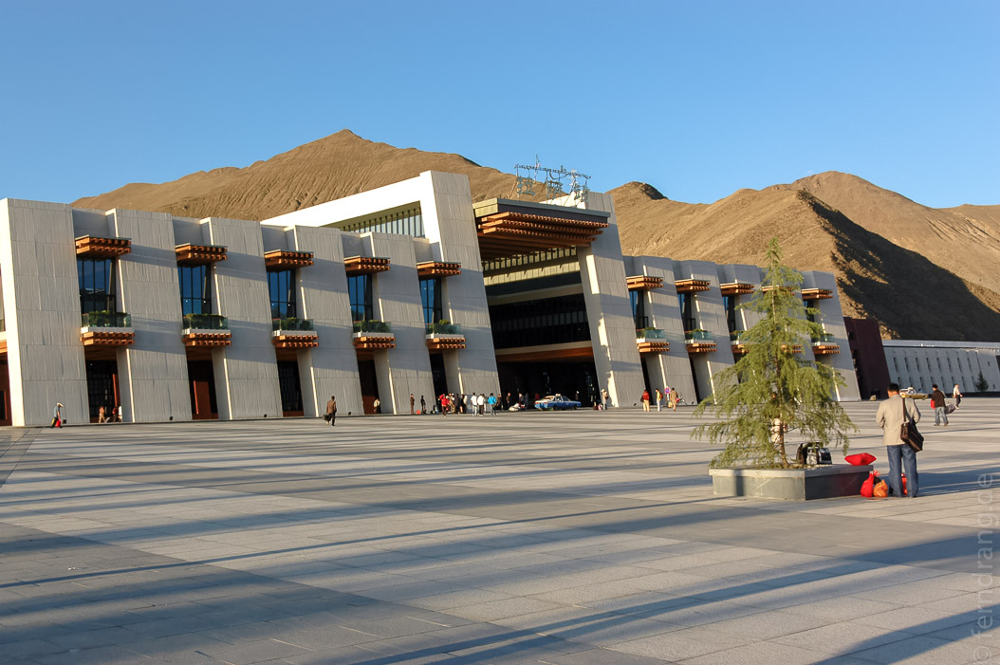
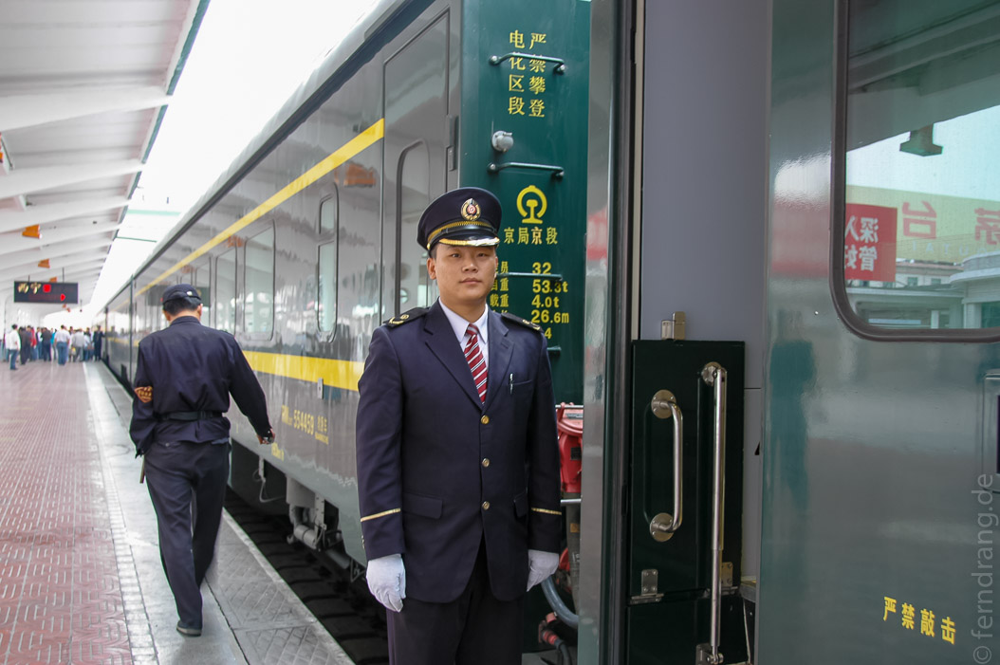
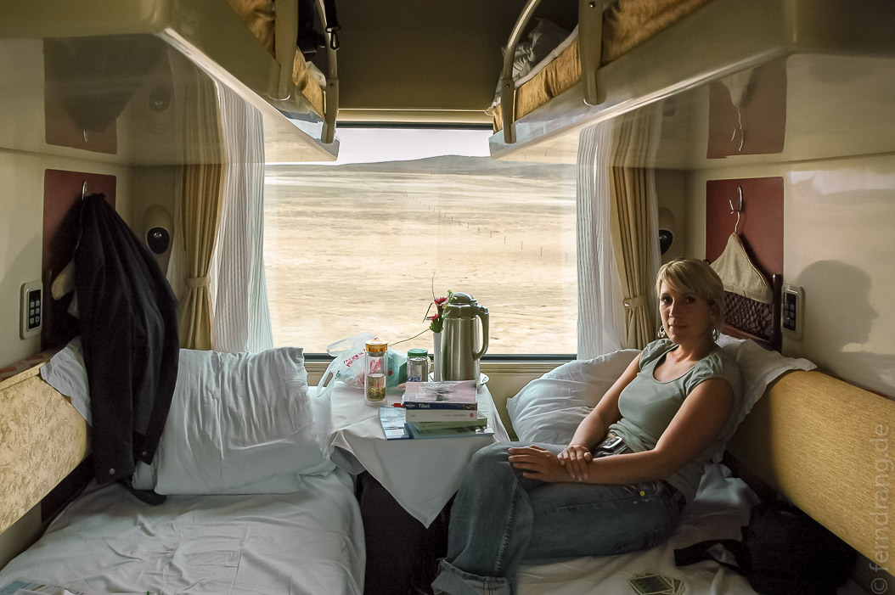
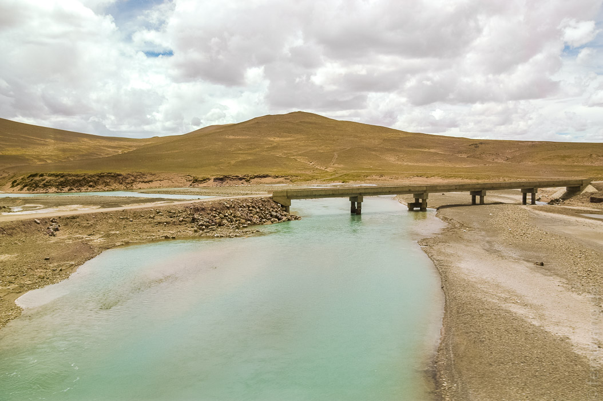
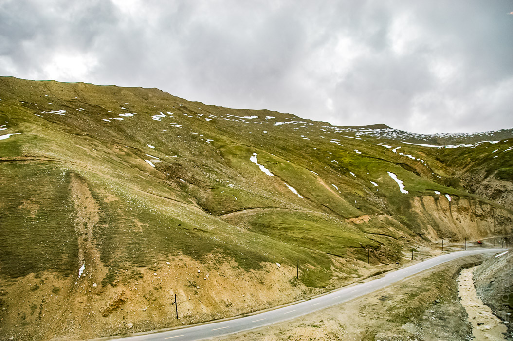
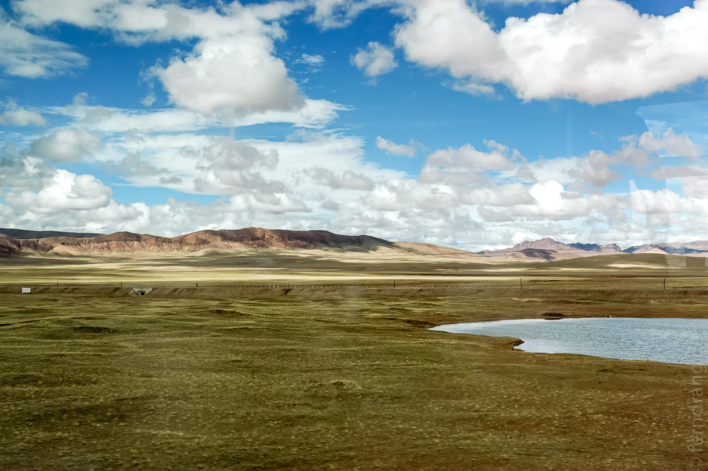

Wehmütig mussten wir Lhasa verlassen. Die Stadt und auch ganz Tibet hat uns so gut gefallen, dass wir unserem Zwischenstopp in Xining gar nicht gebührend entgegen eiferten.
Unser Fahrer und Führer haben uns zum neuen Bahnhof von Lhasa gebracht. Dabei hätte es der Fahrer fast noch geschafft, einen Unfall zu provozieren. Anders kann man es nicht nennen. Sowohl Verkehrsregeln, als auch Straßenbemalungen scheinen in Tibet wenig Eindruck auf Autofahrer zu machen. Daher ist Linksabbiegen hier genauso einfach wie Rechtsabbiegen — vorrausgesetzt, alle anderen weichen aus.
Der Bahnhof ist ein grässliches Ungetüm vor den Toren der Stadt. Vor exakt einem Jahr wurde er samt der Strecke nach Golmud eingeweiht. Bis kurz davor haben an dieser Stelle noch Bauern gelebt.
Als unser Führer sich verabschiedet hat, hat sich der einzige englischsprechende Mensch aus unserer Umgebung entfernt. Auch das Zugpersonal bringt es nicht weiter als OK zu sagen, um einen zum Schweigen zu bringen. Glücklicherweise hatten wir Platzkarten. Viel Platz hatte das Vierer-Schlafwagenabteil aber dennoch nicht.
 Unsere Mitreisenden waren zwei Chinesen, mit denen wir uns ebenfalls überhaupt nicht verständigen konnten. Der eine hat nur geschlafen, der andere nur gehustet und dabei mit seinem Fotoapparat ein Daumenkino von der Strecke hergestellt. Leider haben sich beide häufig um ihre Verköstigung gekümmert, was jedesmal einen bösen, olfaktorischen Fluch über unsere Kabine legte. Die auf den ersten Blick unverdaulichen Speisen wurden mit viel Schmatzen und Schlürfen inhaliert. Als ausgesprochen tolerante Menschen haben wir uns natürlich über den gesunden Appetit unserer chinesischen Freunde sehr gefreut… 
Die ersten zwölf Stunden hat sich der Zug im Schritttempo durch das tibetische Hochland geschoben. Anfangs bot die Landschaft nicht viel Neues, da wir schon viele Stunden mit dem Landcruiser durch die Gegend gefahren wurden. Gegen Abend aber wurden wir langsam für die Strapazen der Zugfahrt entlohnt. Der Zug schleppte sich den über 5000m hohen Pass hinauf, dem er seinen Ruhm als höchste Bahnlinie zu verdanken hat. Um uns herum tauchten immer mehr schneebedeckte Berge auf und die felsige Landschaft gab einen Eindruck von Einsam- und Unendlichkeit. In den langgezogenen Kurven konnten wir einen Blick auf die Zugtrasse werfen, die sich wie eine genähte Narbe durch Landschaft zieht.  
Die Nacht wurde vom Vollmond beleuchtet, so dass die grandiose Landschaft unter einem bleiernen Himmel nochmal in Schwarzweiß an uns vorbei zog. Das beruhigende Klappern der Schwellen hat der kranke Chinese mit ungeheurem Schnarchen untermalt, bis er bei Sonnenaufgang die Dreharbeiten für sein Daumenkino fortsetzte.